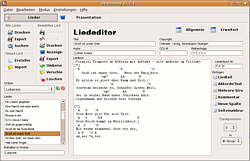
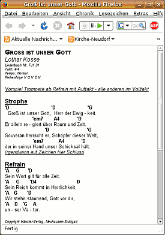
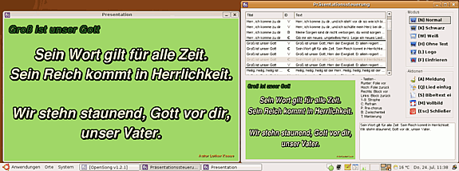

OpenSong
Dieser Artikel wurde für die folgenden Ubuntu-Versionen getestet:
Ubuntu 16.04 Xenial Xerus
Zum Verständnis dieses Artikels sind folgende Seiten hilfreich:
Das Programm OpenSong  richtet sich vor allem an Christen, die während oder außerhalb des sonntäglichen Gottesdienstes einen Lobpreis-Teil gestalten, in dem Liedtexte mit dem Beamer an eine Leinwand gebracht werden. Allzu oft steht man vor der langwierigen Aufgabe, alle Lieder in ein Präsentationsformat zu bringen und hat bei der Durchführung z.B. das Problem, nicht zu wissen, wie oft ein Lied gesungen wird... Dabei gibt es sinnvolle freie Software, die hier Abhilfe leistet. Ein Pendant hierfür ist das unter Windows laufende kommerzielle Songbeamer
richtet sich vor allem an Christen, die während oder außerhalb des sonntäglichen Gottesdienstes einen Lobpreis-Teil gestalten, in dem Liedtexte mit dem Beamer an eine Leinwand gebracht werden. Allzu oft steht man vor der langwierigen Aufgabe, alle Lieder in ein Präsentationsformat zu bringen und hat bei der Durchführung z.B. das Problem, nicht zu wissen, wie oft ein Lied gesungen wird... Dabei gibt es sinnvolle freie Software, die hier Abhilfe leistet. Ein Pendant hierfür ist das unter Windows laufende kommerzielle Songbeamer  .
.
Die Anforderungen für eine solche Software sind z.B.:
leicht eingebbare Liedtexte, ohne zu sehr auf Layout-Fragen eingehen zu müssen
einmal verfasste Lieder einfach in verschiedene Abläufe implementieren
schneller Wechsel auf bestimmte Folien während der Präsentation
Zusätzlich ist wünschenswert:
Bibeltexte (ohne Abschreiben) anzeigen
Liedereingabe zugleich mit Akkorden versehen (damit also eine Beamer-Ansicht und eine Band-Ansicht)
spontan Lieder aus der Datenbank während der Präsentation hinzufügen
Darstellung der einzelnen Folien in einem Vorschaufenster
einfacher Sprachwechsel deutsch/englisch
 Bis auf den letzten werden bei OpenSong alle Punkte erfüllt. Jetzt sollte man sich im Klaren darüber sein, welche Eigenschaften sinnvoll und wichtig für die Präsentationssoftware ist. Verglichen mit der Textverarbeitung: Nimmt man nun das komplexe OpenOffice - oder reicht der Texteditor?
Ganz gleich für welche Art man sich entscheidet - für den Lobpreis-Zweck ist eine normalen Präsentationssoftware (wie OpenOffice.org Impress) wesentlich schlechter geeignet.
Installation¶
OpenSong ist kein Bestandteil der offiziellen Paketquellen. Zur Installation muss man daher auf ein Fremdpaket ausweichen.
Fremdpaket¶
Von OpenSong.org werden
DEB-Pakete  angeboten.
Die unterstützten Ubuntuversionen und Architekturen werden aufgelistet.
Nachdem man sie für die korrekte Ubuntuversion und Architektur geladen hat, müssen DEB-Pakete noch installiert werden.
angeboten.
Die unterstützten Ubuntuversionen und Architekturen werden aufgelistet.
Nachdem man sie für die korrekte Ubuntuversion und Architektur geladen hat, müssen DEB-Pakete noch installiert werden.
Hinweis!
Fremdpakete können das System gefährden.
Falls man eine 64-Bit-Version von Ubuntu nutzt, muss man die 64-Bit-Architektur im Terminal mit --force-architecture erzwingen [2]:
sudo dpkg -i --force-architecture ./opensong_2.1.2-1_i386.deb
Danach kann man OpenSong bei Ubuntu-Varianten mit einem Anwendungsmenü über "Büro -> OpenSong" starten [3].
|  |  |
| HTML-Export | simulierter 2-Monitor-Präsentationsmodus |
Verwendung¶
Sprache einstellen "Settings -> General Settings... -> Basic -> Language"
Es ist günstig, die Einstellungsdateien (wie bei Linux üblich) separat zu platzieren. Man legt also /home/BEISPIELNUTZER/.OpenSong/ an und stellt dieses Verzeichnis auch im Programm unter "Einstellungen -> Allgemein -> Besondere -> Dokumentordner -> Eigener Ordner (und auswählen)" ein. Der Vorteil ist, dass ein installiertes OpenSong (auch in der Windowsversion) lediglich diese Daten benötigt und diese über einen USB-Stick transportiert werden können.
Achtung!
OpenSong verwendet als Dateinamen leider die Original-Liedernamen, was bei Sonderzeichen auf einem FAT-formatierten Stick (Normalfall) problematisch werden kann: Das Lied einer Präsentation existiert nicht, da es einen anderen Namen hat.
OpenSong ist auch für Windows verfügbar. Man kann also auch Lieder unter Ubuntu/Linux entwerfen und testen und später auf dem mit Windows versehenen Beamer-Laptop anzeigen.
Die vorinstallierte Bibel ist englisch. Allerdings gibt es frei verfügbare deutsche Bibelübersetzungen (z.B. Schlachter-Übersetzung von 1951), die sich wiederum auf der Downloadseite von OpenSong.org
befinden. Diese wird entpackt[1] und in das Verzeichnis /pfad/zu/OpenSong/OpenSong Scripture verschoben. Nach einem Neustart von OpenSong sollte die Übersetzung automatisch erkannt und indiziert werden.Die Lieder-Syntax scheint auf den ersten Blick verwirrend und schwierig. Das ändert sich schnell, wenn man einen kurzen Blick in "Hilfe -> Hilfethemen... -> Liedtext-/Akkordeingabe" wirft. Zudem befinden sich einige vorgefertigte englische Lieder als Beispiel in der Datenbank.
Gitarren-Akkorde können sogar transponiert werden (das ist eine Tonhöhenänderung z.B. von C-Dur auf D-Dur).
Richtig komfortabel wird es, wenn Beamer und Laptop-Monitor verschiedene Bilder anzeigen, so dass man die Steuerung der Präsentation nur auf dem Notebook sieht (siehe Screenshot oben im simulierten Modus). Das funktioniert auch mit OpenSong mit der Einschränkung, dass die Fensterdekoration in Ubuntu sichtbar ist. Unter Windows funktioniert es übrigens sehr gut.
Profi-Tipp: Man kann das Layout eines Lied-Ausdruckes sogar mit einem umgeschriebenen CSS durch den eingebauten HTML-Export beeinflussen, die sich in Version 2.1.2 unter /opt/OpenSong/OpenSong Settings/style.css befindet.
| Die wichtigsten Tasten zur Steuerung von OpenSong während der Präsentation | |
| Navigation | |
| ↓ / | nächste Folie |
| ↑ | vorhergehende Folie |
| ← | vorhergehendes Lied / Bibeltext |
| → | nächstes Lied / Bibeltext |
| Springe direkt zu... | |
| 1 - 9 | Strophe 1 - 9 |
| C | Refrain ("Chorus") |
| B | Bridge |
| Zusatz | |
| H | Text ausblenden (Hide) |
| N | zurück zur Normalansicht |
Alternative Programme¶
| Funktionsübersicht | |||||||
| Programm | Liedeingabe | Steuerung | Bibel-Texte | Akkorde | Vorschau-Fenster | Sprachen-Wechsel | Kommentar |
| OpenSong | nach Syntax-Verständnis einfach | Tasten / Maus-Auswahl | installierbar | Ja | Ja | Nein | Der (Fast-)Alles-Könner |
| OpenLP | einfach | Tasten / Maus-Auswahl | installierbar | Nein | Ja | Nein | Sehr übersichtlich, OpenSong-Texte, Texte aus der CCLI-Datenbank und Andere importierbar, kann Videos und Diashows abspielen, kann ppt Präsentationen anzeigen |
| Lyricue | einfach | Tasten / Maus-Auswahl | Nein | Nein | Ja | Nein | ist bestimmt eine echte Alternative zu OpenSong, aber - Würde das jemand testen? bei mir gabs MySQL-Fehler (Paket in Softwarequellen verfügbar!) |
| Asaph | einfach, auch Akkorde | Keine | Nein | Ja | Nein | Nein | nur für die musikalische Gestaltung gedacht, kein Präsentationsmodus, Java-basiert |
- Erstellt mit Inyoka
-
 2004 – 2017 ubuntuusers.de • Einige Rechte vorbehalten
2004 – 2017 ubuntuusers.de • Einige Rechte vorbehalten
Lizenz • Kontakt • Datenschutz • Impressum • Serverstatus -
Serverhousing gespendet von